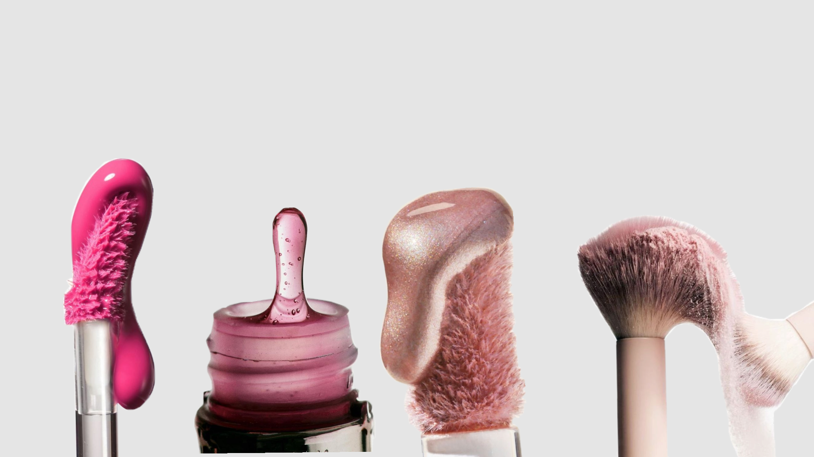

Mercado Nacional de Maquiagem

O mundo de Maquiagem e cosmédicos em geral é bastante diversificado e influênte globalmente.
Venha entender como esse mundo de beleza e autocuidado virou um símbolo feminino e de autocuidado no Brasil.
História
Os cosméticos já existiam muito antes das marcas e dos frascos sofsticados. O homem já transformava plantas, minerais, óleos, gorduras, ceras e resinas em produtos de cuidados para o corpo. Algumas possuiam o objetivo de cuidar da pele, outros de perfurmar, pigmentar os lábios, os cabelos e a pele. Em algumas circunstâncias eram partes de rituais culturais e espirituais.
O origem da palavra cosméticos vem da palavra "kosmetikós" do grego, que significa "a arte de adornar ou embezelar".
Estava diretamente associado à ideia de trazer ordem (cosmos) e harmonia ao corpo.
No entanto, foi no Egito Antigo que encontramos os primeiros registros detalhados do uso de cosméticos para cuidados pessoais.
Os egípcios usavam óleos e unguentos para proteger a pele do sol e do vento, além de maquiagem para os olhos, feita de malaquita verde e kohl, uma mistura de galena (sulfeto de chumbo)
e outros ingredientes.
Na Idade Média, o uso de cosméticos se espalhou pela Europa. A pele pálida ainda era considerada atraente, e chumbo, giz ou farinha eram usados para clareá-la. Algumas pessoas até praticavam sangrias na tentativa de clarear a pele.
Batom e rouge eram associados a mulheres de "má índole", como prostitutas. Sabe-se que autoridades da Igreja proclamavam que cosméticos eram usados apenas por pagãos e adoradores de Satanás!
O início do século XX marcou o nascimento da moderna indústria de cosméticos. Por volta de 1910, o mundo do entretenimento desempenhou um papel importante na popularização dos cosméticos. A tendência começou com estrelas do balé e do teatro, e mais tarde com atores de Hollywood, onde ícones como Helena Rubinstein e Max Factor iniciaram suas carreiras como maquiadores. Com o aumento do conhecimento e a introdução de padrões de qualidade, ingredientes perigosos como óxido de estanho, chumbo branco e arsênico deixaram de ser usados rapidamente.
Mercado no Brasil
O mercado de beleza e maquiagem no Brasil começou a se estruturar no século XIX com a importação de produtos europeus para a elite, mas se consolidou como uma potência industrial própria a partir do século XX com a chegada de multinacionais e o impulso de marcas nacionais.
Os primeiros registros de comercialização de produtos de beleza no país aparecem em jornais da década de 1860 (como o Correio Mercantil no Rio de Janeiro), voltados à elite feminina, com itens como pós faciais (poudre de riz), rouge (blush) e pós para unhas.
A Casa Granado, fundada em 1870 no Rio de Janeiro, é considerada a pioneira na produção de cosméticos e produtos de higiene no Brasil, abrindo caminho
para a indústria nacional do setor.